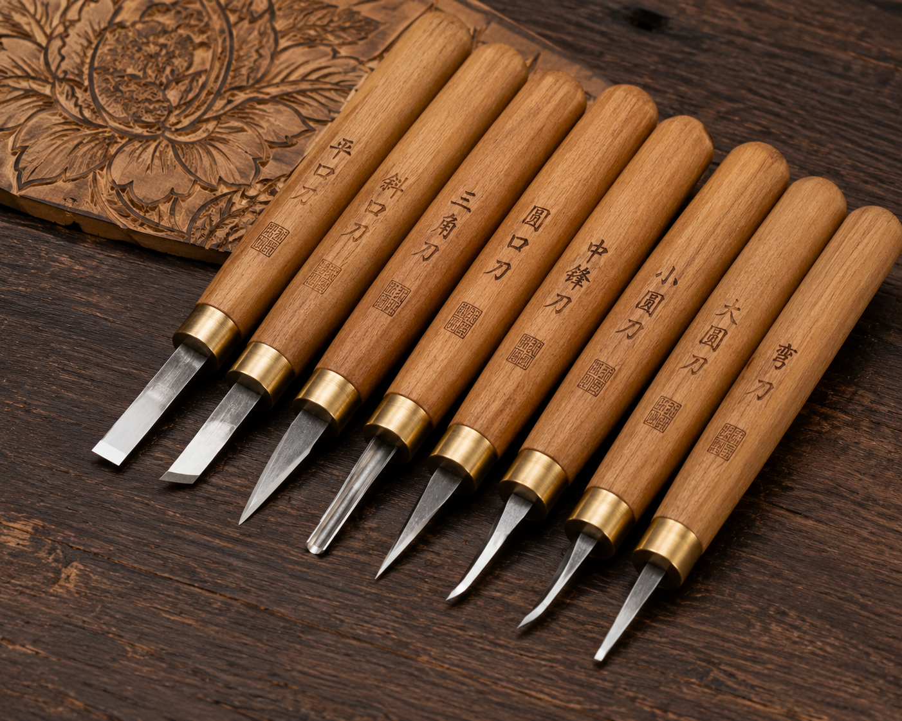

一纸一世界，一剪一乾坤
剪纸，又称刻纸，是中国最古老的民间艺术之一。以剪刀或刻刀在纸上剪刻花纹，用于装点生活或配合其他民俗活动。剪纸艺术源远流长，最早可追溯至公元六世纪的南北朝时期。
剪纸的载体可以是纸张、金银箔、树皮、树叶、布、皮、革等片状材料。剪纸艺术是中华民族的瑰宝，于2009年入选联合国教科文组织人类非物质文化遗产代表作名录。
中国剪纸分为南派和北派两大体系。北派剪纸以陕西、山西为代表，风格粗犷豪放、造型简练；南派剪纸以江苏、浙江、广东为代表，风格纤细秀丽、精巧明快。蔚县剪纸、佛山剪纸、扬州剪纸等各具独特的地域风貌。

工具与材料
剪纸的主要工具包括剪刀和刻刀。剪刀用于剪制较为粗放的图案，而刻刀则适合精细复杂的花纹。传统剪纸使用大红宣纸或蜡光纸，纸张薄韧、色泽鲜艳、不易褪色。
常用的剪纸工具和材料有：
- 剪刀
- 刻刀
- 红宣纸
- 蜡光纸
- 垫板
- 订书器
制作步骤
1 起稿：用铅笔在纸上描出图案轮廓，确定构图与细节。
2 订纸：将画稿与色纸叠在一起，用订书器或纸捻固定四周。
3 剪刻：按照由内到外、由细到粗的顺序，用剪刀或刻刀镂空图案。
4 揭离：小心将剪好的作品从纸层中分离出来。
5 粘贴：将成品平整地粘贴在衬纸上，装裱完成。
「镂金作胜传荆俗，翦彩为人起晋风。」—— 唐代诗人李商隐笔下的剪纸盛景